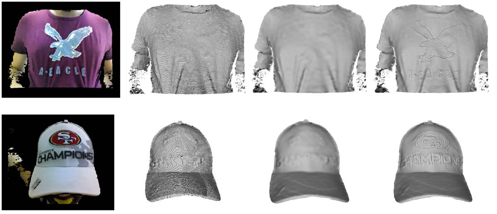

Geometric Image Processing Lab
RGBD-Fusion: Real-Time High Precision Depth Recovery
CVPR 2015
Roy Or – El1 Guy Rosman2 Aaron Wetzler1 Ron Kimmel1 Alfred M. Bruckstein1
1Technion – Israel Institute of Technology
2Computer Science and Artificial Intelligence Lab, MIT

Abstract
The popularity of low-cost RGB-D scanners is
increasing on a daily basis. Nevertheless, existing scanners often cannot
capture subtle details in the environment. We present a novel method to enhance
the depth map by fusing the intensity and depth information to create more
detailed range profiles. The lighting model we use can handle natural scene
illumination. It is integrated in a shape from shading like technique to
improve the visual fidelity of the reconstructed object. Unlike previous
efforts in this domain, the detailed geometry is calculated directly, without
the need to explicitly find and integrate surface normals. In addition, the proposed method operates
four orders of magnitude faster than the state of the art. Qualitative and
quantitative visual and statistical evidence support the improvement in the
depth obtained by the suggested method.
Video
Publications
1.
RGBD-Fusion: Real-Time High Precision Depth
Recovery. Roy Or-El, Guy Rosman, Aaron Wetzler,
Ron Kimmel, Alfred M. Bruckstein. In
proceedings of IEEE Conference on Computer Vision and Pattern Recognition
(CVPR), 2015. [pdf] [extended abstract] [bibtex]
Code
A Matlab demo of our method for evaluation and comparisons can be downloaded here: [code]